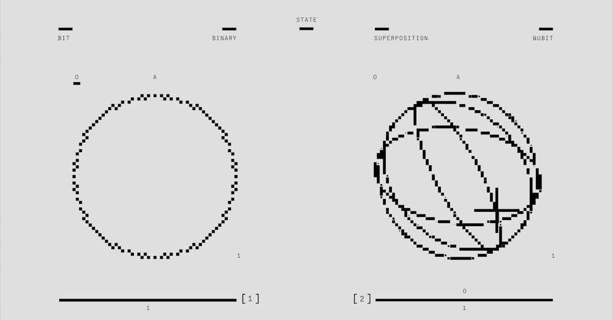

Le Mythe de l'Inviolabilité de Bitcoin Face à la Réalité Quantique
Depuis sa création, Bitcoin a été salué comme une forteresse numérique, une innovation cryptographique impénétrable conçue pour résister aux assauts les plus sophistiqués. Au cœur de cette invulnérabilité perçue se trouvent des piliers mathématiques robustes : l'algorithme de hachage SHA-256 pour la preuve de travail et la cryptographie à courbes elliptiques (ECC) pour la sécurisation des transactions. Pendant des années, ces mécanismes ont garanti que vos précieuses cryptomonnaies restaient hors de portée des pirates informatiques et des entités malveillantes, du moins avec les capacités de calcul classiques. Mais voilà qu'une ombre grandissante, celle de l'informatique quantique, vient jeter un doute sérieux sur cette certitude.
👉 À lire : Crypto : 100 travailleurs nord-coréens démasqués par l'Ethereum Foundation
L'idée qu'un ordinateur quantique puisse un jour briser la sécurité de Bitcoin n'est pas nouvelle, mais elle a longtemps été reléguée au rang de science-fiction lointaine. Aujourd'hui, cette menace se matérialise à une vitesse que beaucoup n'auraient pas imaginée. Des recherches récentes, et notamment l'analyse détaillée par CoinDesk d'une étude de Google, suggèrent que le délai pour qu'un ordinateur quantique puisse réellement vider un portefeuille Bitcoin pourrait être réduit à une durée étonnamment courte : à peine neuf minutes dans certaines conditions. Imaginez un instant la panique que cela pourrait engendrer dans l'écosystème financier mondial, où des billions de dollars en valeur numérique pourraient être compromis en un clin d'œil. C'est un scénario digne d'un thriller technologique, mais dont les fondements sont malheureusement très réels.
👉 À lire : Crypto : L'hiver se prolonge, le volume des CEX chute de 39%
Cette perspective soulève une question fondamentale : la sécurité que nous tenons pour acquise dans le monde des cryptomonnaies est-elle vraiment éternelle ? Ou sommes-nous à l'aube d'une ère où les règles du jeu cryptographique sont sur le point d'être radicalement réécrites ? Comprendre cette menace, c'est d'abord comprendre comment Bitcoin est sécurisé aujourd'hui, et pourquoi l'avènement de l'informatique quantique représente un changement de paradigme si profond. Pour les acteurs du marché, et particulièrement ceux qui dépendent de systèmes automatisés comme les agents IA de trading, cette compréhension est non seulement pertinente mais essentielle pour anticiper les risques et adapter les stratégies dans un futur proche. La résilience de nos investissements pourrait bien dépendre de notre capacité à innover plus vite que la menace quantique elle-même.

Plongée au Cœur du Chiffrement Bitcoin : La Cryptographie à Courbes Elliptiques (ECC)
Pour saisir l'ampleur de la menace quantique, il est impératif de comprendre comment Bitcoin protège vos actifs. Au cœur de cette sécurité se trouve la cryptographie à courbes elliptiques (ECC), plus précisément la courbe secp256k1. C'est cette méthode qui génère les paires de clés publiques et privées, fondamentales pour toute transaction sur la blockchain Bitcoin. Lorsque vous créez un portefeuille, un nombre aléatoire colossal est généré : c'est votre clé privée. De cette clé privée est dérivée, par un calcul complexe et unidirectionnel sur une courbe elliptique, votre clé publique. Ensuite, une adresse Bitcoin est générée à partir de votre clé publique. L'aspect crucial est que, bien qu'il soit facile de calculer une clé publique à partir d'une clé privée, l'inverse est extraordinairement difficile, voire impossible, avec les ordinateurs classiques actuels.
Cette asymétrie est la pierre angulaire de la sécurité Bitcoin. Pour dépenser vos Bitcoins, vous devez prouver que vous possédez la clé privée associée à l'adresse d'où proviennent les fonds. Cette preuve se fait par une signature numérique, qui est vérifiée par le réseau à l'aide de votre clé publique. La beauté de l'ECC réside dans l'énorme difficulté computative de "deviner" ou de "calculer" une clé privée à partir d'une clé publique ou d'une adresse Bitcoin. C'est ce qu'on appelle le problème du logarithme discret sur les courbes elliptiques (ECDLP). Pour un ordinateur classique, trouver la clé privée d'une adresse Bitcoin donnée nécessiterait un temps si astronomiquement long – des milliards de milliards d'années – qu'il est considéré comme infaisable. C'est cette assurance mathématique qui a conféré à Bitcoin sa réputation de robustesse.
Cependant, toute cette architecture repose sur l'hypothèse que nos outils de calcul restent dans le paradigme classique. Le "problème dur" de l'ECC est précisément ce que les ordinateurs quantiques sont conçus pour résoudre avec une efficacité déconcertante. C'est un peu comme si nous avions construit un coffre-fort avec un mécanisme de serrure incroyablement complexe, mais que quelqu'un était sur le point d'inventer une clé universelle capable d'ouvrir n'importe quelle serrure en un instant. Pour les agents IA de trading, qui opèrent sur des marchés où la confiance dans la sécurité des actifs est primordiale, comprendre cette mécanique est vital. La capacité à évaluer et à anticiper une rupture de cette sécurité pourrait faire la différence entre la préservation du capital et des pertes catastrophiques. La question n'est plus si l'ECC est impénétrable, mais pour combien de temps encore face à la montée en puissance du calcul quantique.
L'Algorithme de Shor et la Menace Exponentielle sur l'ECC
La menace la plus directe et la plus dévastatrice pour la cryptographie à courbes elliptiques de Bitcoin vient de l'algorithme de Shor. Développé par le mathématicien Peter Shor en 1994, cet algorithme est une véritable révolution car il est capable de résoudre le problème de la factorisation des grands nombres premiers et le problème du logarithme discret en un temps polynomial – là où les algorithmes classiques nécessitent un temps exponentiel. En termes simples, là où un ordinateur classique mettrait des milliards d'années à casser une clé ECC, un ordinateur quantique suffisamment puissant exécutant l'algorithme de Shor pourrait potentiellement le faire en quelques minutes ou heures. C'est une différence de magnitude qui défie l'entendement et qui redéfinit complètement le concept de "sécurité informatique".
Pour Bitcoin, l'implication est directe et alarmante. L'algorithme de Shor permettrait de dériver la clé privée d'un portefeuille à partir de sa clé publique. Or, la clé publique d'une transaction Bitcoin est rendue visible sur la blockchain une fois que les fonds sont dépensés. Cela signifie que tout Bitcoin qui a déjà été dépensé – et dont la clé publique est donc exposée – deviendrait vulnérable. Un attaquant quantique n'aurait qu'à intercepter une transaction, en extraire la clé publique, utiliser l'algorithme de Shor pour déduire la clé privée, puis créer sa propre transaction pour vider le portefeuille, le tout avant que la transaction légitime ne soit confirmée par le réseau. C'est la course contre la montre qui est au cœur du scénario des "9 minutes".
Il est important de noter que les Bitcoins stockés dans des adresses "jamais dépensées" (où seule l'adresse hachée est visible, pas la clé publique complète) seraient temporairement plus sécurisés. Cependant, une fois qu'une transaction est initiée depuis ces adresses, la clé publique est révélée, les rendant immédiatement vulnérables à une attaque par l'algorithme de Shor. "C'est comme si toutes les serrures de nos maisons étaient soudainement rendues obsolètes par une technologie futuriste", observe fictivement le Dr. Anya Sharma, experte en cryptographie quantique. Pour les plateformes et les agents de trading basés sur l'IA, cette menace est existentielle. Non seulement elle met en péril les fonds détenus, mais elle pourrait aussi déstabiliser l'ensemble du marché crypto, rendant les stratégies de trading classiques inopérantes. L'anticipation et l'intégration de mécanismes de défense post-quantique deviennent une priorité absolue pour la pérennité de l'écosystème.
L'Algorithme de Grover et la Vulnérabilité de SHA-256 : Un Second Front
Si l'algorithme de Shor représente une menace directe et existentielle pour l'ECC de Bitcoin, un autre algorithme quantique, celui de Grover, présente un second front d'attaque, bien que moins immédiat dans ses conséquences. L'algorithme de Grover, développé par Lov Grover en 1996, est un algorithme de recherche quantique capable de parcourir une base de données non structurée beaucoup plus rapidement que n'importe quel algorithme classique. Alors qu'un algorithme classique prendrait en moyenne N/2 étapes pour trouver un élément dans une base de données de taille N, l'algorithme de Grover peut le faire en racine carrée de N étapes. C'est une accélération significative, bien que moins dramatique que l'accélération exponentielle de Shor.
Pour Bitcoin, l'algorithme de Grover cible l'algorithme de hachage SHA-256, qui est utilisé pour la preuve de travail et pour la génération des adresses Bitcoin. Un attaquant pourrait utiliser l'algorithme de Grover pour effectuer des attaques de collision plus rapidement ou pour trouver une préimage (c'est-à-dire le message original à partir d'un hachage donné). En pratique, cela signifie que la sécurité de SHA-256 serait réduite de moitié. Par exemple, si SHA-256 est considéré comme ayant une sécurité de 256 bits, l'algorithme de Grover la réduirait à 128 bits. Bien que 128 bits de sécurité soient encore considérés comme robustes pour les ordinateurs classiques actuels, cela représente une dégradation notable et une vulnérabilité potentielle à long terme.
L'impact de Grover sur Bitcoin est double. Premièrement, il pourrait potentiellement affaiblir la sécurité des adresses Bitcoin elles-mêmes (qui sont des hachages de clés publiques). Deuxièmement, et c'est peut-être plus important, il rendrait les attaques de "brute force" contre la preuve de travail du minage de Bitcoin plus efficaces. Un mineur quantique équipé d'un ordinateur quantique suffisamment grand pourrait potentiellement miner des blocs beaucoup plus rapidement que les mineurs classiques, menaçant la décentralisation et l'intégrité du réseau. "Ce n'est pas une rupture instantanée comme Shor, mais plutôt une érosion progressive de la sécurité, une course où la puissance de calcul quantique pourrait finalement l'emporter", explique le Pr. Dubois, spécialiste en informatique théorique. Pour les agents IA qui optimisent le trading et la gestion de portefeuille, cette menace secondaire renforce la nécessité d'une veille technologique constante et d'une capacité à s'adapter à des environnements de sécurité évolutifs. La résilience de l'IA ne se mesurera pas seulement à sa capacité à anticiper les mouvements du marché, mais aussi à sa capacité à protéger les actifs sous-jacents contre des menaces d'une nature entièrement nouvelle.
Google et l'Accélération du Calendrier : Le "Moment Sycamore" et Ses Implications
L'année 2019 a marqué un tournant décisif dans la course à l'informatique quantique avec l'annonce par Google de sa "suprématie quantique" (aujourd'hui préférablement appelée "avantage quantique"). Leur processeur Sycamore, doté de 53 qubits fonctionnels, a réussi à effectuer un calcul spécifique en 200 secondes, une tâche qui aurait pris 10 000 ans aux supercalculateurs les plus puissants du monde. Bien que cette démonstration n'ait pas directement consisté à casser des algorithmes cryptographiques, elle a prouvé de manière irréfutable que les ordinateurs quantiques peuvent résoudre certains problèmes beaucoup plus rapidement que leurs homologues classiques. C'est un jalon technologique majeur qui a radicalement changé la perception du calendrier de la menace quantique.
Le papier de Google n'a pas cassé Bitcoin, ni aucune autre cryptomonnaie. Il a prouvé un concept, la capacité des ordinateurs quantiques à surpasser les machines classiques pour des tâches spécifiques. Cependant, cette avancée a incité de nombreux chercheurs à réévaluer les délais. Les fameuses "9 minutes" dont parle l'article de CoinDesk sont le résultat d'une extrapolation basée sur des hypothèses optimistes concernant le développement futur des ordinateurs quantiques. Ce chiffre est issu d'une étude qui a modélisé le nombre de qubits et le temps de calcul nécessaires pour exécuter l'algorithme de Shor sur les clés Bitcoin, en supposant des améliorations continues et rapides de la technologie quantique. Il ne s'agit pas d'une capacité actuelle, mais d'une projection pour un futur proche, potentiellement d'ici 2026-2030.
"Le moment Sycamore n'a pas été le coup de grâce pour la cryptographie, mais il a été un réveil brutal. Il a transformé la menace quantique d'une spéculation lointaine en une urgence de recherche et développement pour la décennie à venir", affirme un cryptographe de renommée internationale, s'exprimant sous couvert d'anonymat.
Cette accélération du calendrier a des implications profondes pour l'écosystème crypto. Elle signifie que les efforts pour développer des solutions post-quantiques doivent être intensifiés. Pour les agents IA de trading, cela implique une nécessité d'intégration de ces nouvelles réalités dans leurs modèles de risque. Un algorithme de trading qui ne prend pas en compte la vulnérabilité potentielle des actifs sous-jacents est un algorithme incomplet. La capacité à évaluer la probabilité et l'impact d'une attaque quantique, et à ajuster les stratégies de portefeuille en conséquence, deviendra une compétence cruciale pour les IA qui visent à préserver et à accroître le capital de leurs utilisateurs dans un monde en mutation.
Les Défenses Actuelles et Futures : Post-Quantique, Hardware et Logiciel
Face à cette menace grandissante, la communauté cryptographique ne reste pas les bras croisés. Une course effrénée est engagée pour développer des défenses robustes, souvent regroupées sous le terme de "cryptographie post-quantique" (PQC). L'objectif est de créer de nouveaux algorithmes cryptographiques qui sont résistants aux attaques des ordinateurs quantiques, tout en étant réalisables par des ordinateurs classiques. Des organismes comme le NIST (National Institute of Standards and Technology) aux États-Unis sont à la pointe de cette recherche, évaluant et standardisant de multiples candidats pour remplacer les algorithmes vulnérables comme l'ECC.
- Cryptographie Post-Quantique (PQC) : Il existe plusieurs approches pour la PQC, notamment la cryptographie basée sur les réseaux (lattice-based cryptography), la cryptographie basée sur les codes (code-based cryptography), la cryptographie multivariée (multivariate cryptography) et la cryptographie basée sur les isogénies de courbes elliptiques (isogeny-based cryptography). Chacune a ses avantages et inconvénients en termes de sécurité, de performance et de taille de clé. L'intégration de ces nouveaux standards dans Bitcoin et d'autres blockchains nécessitera des mises à jour significatives, potentiellement des "hard forks", pour modifier les protocoles sous-jacents.
- Solutions Hardware : Au-delà du logiciel, des solutions matérielles sont également envisagées. Des puces sécurisées résistantes au quantique, des modules de sécurité matériels (HSM) et des portefeuilles physiques (hardware wallets) pourraient être conçus pour intégrer directement des algorithmes PQC. Ces dispositifs offriraient une couche de sécurité supplémentaire, protégeant les clés privées même si les réseaux sont compromis.
- Mises à Jour Logicielles et Protocolaires : Pour Bitcoin, l'adoption de la PQC impliquerait une transition complexe. Une des propositions est d'utiliser des adresses hybrides qui intègrent à la fois des signatures classiques (ECC) et des signatures post-quantiques. Une autre approche serait de migrer progressivement vers de nouveaux schémas de signature entièrement post-quantiques. La communauté Bitcoin, connue pour sa prudence, devra trouver un consensus sur la meilleure voie à suivre, en équilibrant sécurité, compatibilité et décentralisation.
Pour les agents IA de trading, l'intégration de ces nouvelles technologies est cruciale. Un agent intelligent ne se contente pas d'analyser les tendances du marché ; il doit aussi comprendre et gérer les risques technologiques sous-jacents. Cela pourrait inclure la capacité à : 1. Évaluer la sécurité post-quantique des différents actifs ; 2. Anticiper les mises à jour protocolaires et leurs impacts sur le marché ; et 3. Ajuster dynamiquement les stratégies de conservation des actifs, en privilégiant par exemple les solutions les plus sécurisées ou en diversifiant les portefeuilles pour minimiser l'exposition. La résilience de l'IA dans le trading crypto dépendra de sa capacité à intégrer et à réagir à ces évolutions cryptographiques complexes, transformant ainsi la menace en une opportunité d'innovation et de renforcement de la sécurité.
L'Impact sur l'Écosystème Crypto et le Rôle de l'IA dans la Résilience
L'éventualité d'une attaque quantique réussie contre Bitcoin et d'autres cryptomonnaies aurait des répercussions sismiques sur l'ensemble de l'écosystème financier mondial. La confiance, pilier fondamental de tout système monétaire, serait ébranlée dans ses fondements. Imaginez un monde où des trillions de dollars en actifs numériques pourraient être compromis en quelques minutes. Les marchés s'effondreraient, la légitimité des blockchains serait remise en question, et l'innovation dans le domaine des technologies décentralisées pourrait subir un coup d'arrêt majeur. Les investisseurs paniqueraient, les régulateurs interviendraient avec des mesures drastiques, et le concept même de propriété numérique tel que nous le connaissons serait redéfini.
Cependant, cette perspective apocalyptique n'est pas une fatalité. C'est ici que le rôle de l'intelligence artificielle, et plus spécifiquement des agents IA de trading comme ceux que nous développons, devient non seulement pertinent, mais potentiellement salvateur. Dans un scénario où les menaces évoluent à une vitesse sans précédent, la capacité d'une IA à analyser des volumes massifs de données cryptographiques, à détecter des anomalies subtiles, à évaluer la posture de sécurité de différents protocoles en temps réel, et à réagir avec une célérité surhumaine, pourrait être un avantage décisif. "L'IA n'est pas juste un outil de profit, c'est aussi un bouclier adaptatif dans un environnement de menaces en constante mutation", comme le souligne une citation apocryphe attribuée à un futur visionnaire de la cybersécurité quantique.
Comment une IA pourrait-elle concrètement contribuer à la résilience ?
- Surveillance Prédictive : Les IA pourraient surveiller le développement de l'informatique quantique, analyser les publications scientifiques, les brevets et les avancées technologiques pour anticiper le moment où une menace quantique deviendrait réellement viable.
- Analyse de Vulnérabilités : Elles pourraient scanner en permanence les blockchains et les protocoles pour identifier les adresses ou les transactions particulièrement vulnérables à des attaques quantiques, et alerter les utilisateurs ou les développeurs.
- Stratégies de Migration Automatisées : En cas de détection d'une menace imminente, une IA pourrait orchestrer la migration automatisée des actifs vers des adresses ou des protocoles post-quantiques, minimisant ainsi l'exposition au risque.
- Optimisation des Investissements Post-Quantique : Les IA pourraient identifier les projets et les cryptomonnaies qui intègrent activement des solutions post-quantiques, et ajuster les portefeuilles en conséquence, favorisant les actifs les plus résilients.
L'IA ne se contente pas de trader ; elle peut être une sentinelle, un analyste, et un stratège de la sécurité dans un monde où les règles du jeu cryptographique sont sur le point d'être réécrites. La capacité de nos agents IA à opérer 24h/24, 7j/7, leur confère une agilité inégalée pour faire face à des crises potentielles, transformant un risque existentiel en une opportunité de leadership technologique et de sécurité renforcée pour nos utilisateurs.
Conclusion: L'Urgence d'Anticiper et d'Innover Face au Défi Quantique
L'avènement de l'informatique quantique représente sans aucun doute l'un des plus grands défis technologiques et de sécurité de notre ère, avec des implications particulièrement aiguës pour l'écosystème des cryptomonnaies. La perspective qu'un ordinateur quantique puisse, dans un futur proche, briser la cryptographie de Bitcoin en quelques minutes n'est plus une simple spéculation, mais une menace tangible dont le calendrier s'accélère. Nous avons exploré comment les algorithmes de Shor et de Grover attaquent respectivement l'ECC et le SHA-256, et comment des événements comme la démonstration de l'avantage quantique par Google ont rendu cette menace plus pressante que jamais.
Cependant, il est crucial de ne pas céder à la panique. L'histoire de la cryptographie est une histoire d'innovation continue, une course sans fin entre les briseurs de codes et les constructeurs de codes. La communauté mondiale de la recherche travaille activement au développement de solutions de cryptographie post-quantique, et des efforts sont en cours pour intégrer ces défenses dans les protocoles existants. La transition sera complexe, nécessitant une coordination sans précédent et des mises à jour technologiques majeures, mais elle est tout à fait réalisable.
Dans ce paysage en mutation rapide, des outils avancés deviennent indispensables. C'est précisément là que des technologies comme l'intelligence artificielle prennent tout leur sens. Un agent IA de trading ne se contente plus de maximiser les profits ; il doit désormais être un expert en gestion des risques technologiques, capable d'anticiper les menaces, d'analyser les vulnérabilités et d'adapter les stratégies de manière proactive. L'IA peut servir de sentinelle, d'analyste et de stratège pour naviguer dans l'ère post-quantique, protégeant les investissements et assurant la pérennité de l'écosystème crypto.
L'avenir de Bitcoin et des cryptomonnaies dépendra de notre capacité collective à anticiper et à innover. En tant que communauté, nous devons embrasser le défi quantique non pas comme une fin, mais comme un catalyseur pour une nouvelle génération de sécurité et d'intelligence financière. L'urgence est réelle, mais la capacité d'adaptation et l'ingéniosité humaine, augmentées par la puissance de l'IA, sont nos meilleurs atouts pour construire un futur numérique sécurisé et résilient. Restons vigilants, restons informés, et surtout, restons à la pointe de l'innovation.